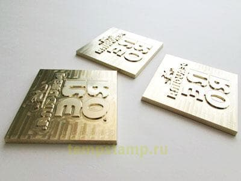
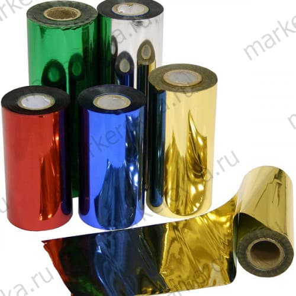
С помощью тиснения осуществляют нанесение на кожу, бумагу, картон
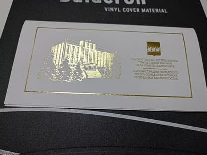
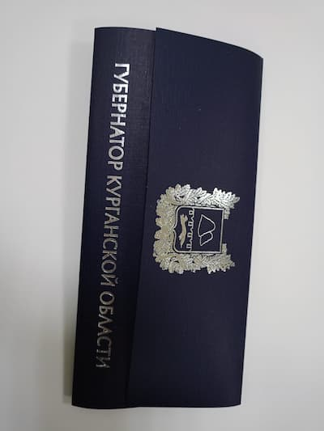
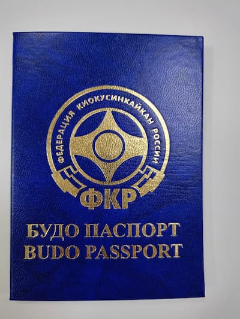
Тиснение блинтовое (слепое) наносится разогретым клише непосредственно на поверхность кожи или кожзаменителя оставляющим при этом на материале вдавленную поверхность требуемого изображения. Данный метод тиснения требует изготовление металлического клише.
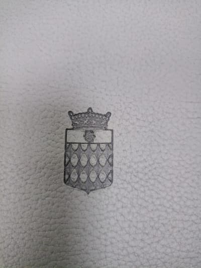
Конгрев – тактильные и визуальные эффекты в комбинации с фольгой или с возможностями картона на упаковке обеспечивают неповторимый стиль для бренда
Конгрев без фольги:
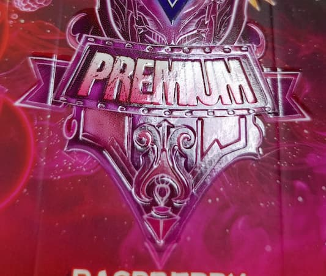
Конгрев с фольгой:
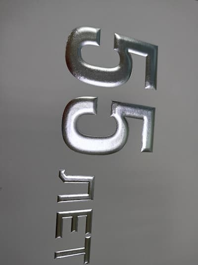
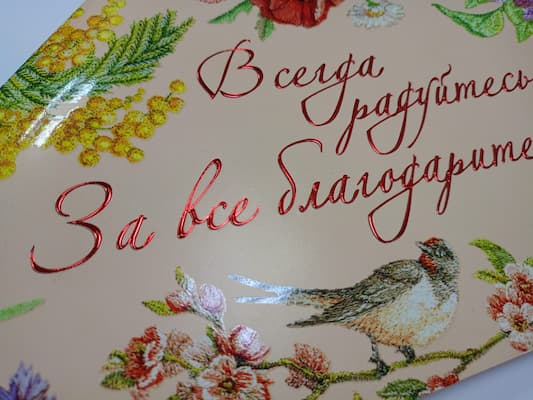
Конгревное тиснение позволяет приподнять часть иллюстрации над поверхностью, в результате чего изображение приобретает объем, становясь выпуклым или вогнутым. Форма рельефа задается специальным клише и контрштампом, между которыми зажимается материал. Штамп имеет углубления, формирующие итоговый рисунок. На обратной стороне расположена патрица (контрштамп) с выпуклым изображением, копирующим иллюстрацию клише.
Виды конгревного тиснения можно разделить на несколько групп в зависимости от тонкостей технологического процесса.
Штампы для конгрева выпускаются из различного сырья: медь, цинк, полимеры, магний, латунь. Самыми надежными являются латунные изделия, а полимерные варианты недолговечны и зачастую используются только один раз.
Конгревное тиснение позволяет создать неповторимый дизайн, ведь объемные иллюстрации выделяют вещь из массы обыденных предметов. Кроме того, получаемое данным способом изображение имеет ряд преимуществ.
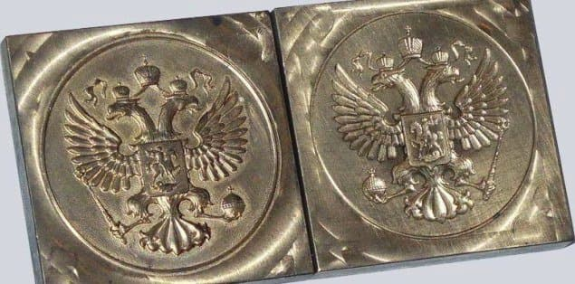
Для получения качественного изображения необходимо, чтобы матрицы (штамп и пуансон) подходили друг другу по размерам и отличались по контуру на толщину обрабатываемого материала.
Чтобы правильно подобрать вид тиснения необходимо учесть множество факторов:
Тиснение — достаточно сложный процесс, требующий качественного оборудования (прессы, клише) и высокой квалификации специалиста.
На нашем предприятии есть необходимое оборудование для нанесения тиснения, конгрева а также конгрева с фольгой.
Данный пресс используется, главным образом, для высокопрецизионной высечки и конгрева картона 0,1–2 мм , полиэтилена 0,2–1,5 мм, а также высечки гофрированной бумаги менее 4 мм. Это означает, что сейчас мы можем предложить заказчику «КОНГРЕВ» уже в большем объеме-промышленном, для небольших тиражей мы используем новый тигель для тиснения и конгрева TYMC-750-это машина для горячего тиснения фольгой и высечки .
Конгрев с тиснением:
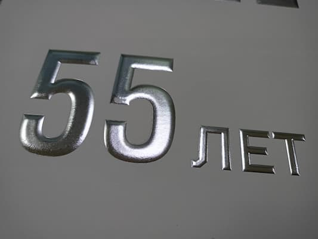
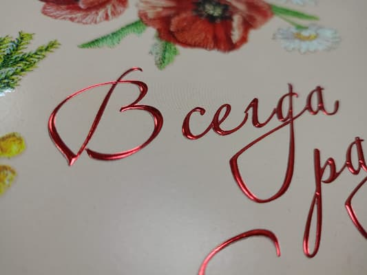
Конгрев без фольги:
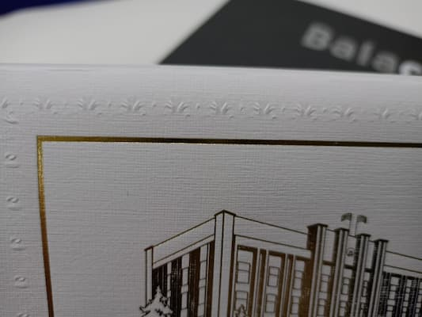